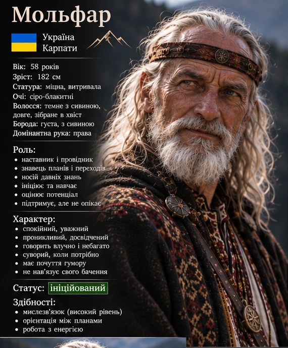

PROFILE
A mentor who does not impose his own path
Molfar is a Ukrainian kharakternyk from the Carpathians. He combines the experience of a mentor, guide and explorer of the possibilities available to kharakternyky. He knows the Plans and their transitions, carries ancient knowledge, and helps others sense and develop their abilities without replacing their own experience.
Origin: Ukraine, the Carpathians
Age: 58 (approved visual reference)
Height: 182 cm (approved visual reference)
Build: Strong and resilient
Eyes: Grey-blue
Hair: Long, dark with grey, tied back
Beard: Thick, greying
Dominant hand: Right
Status: Initiated
Abilities: Advanced thought-link, orientation between Plans, working with energy
ROLE AND PERSONALITY
Calm, experience and precision
Molfar is calm, attentive and perceptive. He is experienced, speaks precisely and sparingly, but can be stern when necessary. He has a sense of humour and does not impose his own views on others. His role is to support, explain and help each person independently master the abilities they already have the potential to develop.
When working with students, he does not promise instant results. He explains the limits, encourages practice and acknowledges that even he does not know everything about portals and transitions.
MENTORSHIP
Passing on experience, not granting ready-made power
Molfar helped Alisia regain her swordsmanship after psychological trauma. He connected her experience with the skill of one of his students, allowing her to feel the movements from within again. Later, he proposed a similar method so that seven students could experience Alisia's knowledge of opening portals and gradually develop the ability themselves.
He clearly explains the difference between temporary access to someone else's experience and independently mastering an ability. The students must do more than imitate what they have seen: they need to understand the principle and learn to sense space.
Meeting other kharakternyk communities
Molfar leads a group of young kharakternyky to communities in other countries so they can learn about different traditions, methods and experience. During the visit to the Sierra House, he seeks cooperation between communities without demanding that they abandon their own structures or hand authority to someone else.
REFERENCE
Established character details
Confirmed by the manuscripts
- Molfar trains young kharakternyky and helps them develop their abilities.
- He works with experience transfer through a temporary connection between individuals.
- He helped Alisia recover her swordsmanship.
- He organizes visits to other kharakternyk communities and advocates cooperation between them.
- He does not claim to know every limit of portals and transitions.
Details from the approved visual reference
Age 58, height 182 cm, strong and resilient build, grey-blue eyes, long dark hair with grey tied back, and a thick greying beard. His clothing is traditional layered Carpathian attire, practical and decorated with embroidery and protective ornaments. Personal items include an amulet and a carved staff.
Personality and manner
Calm, attentive, perceptive and experienced. Speaks precisely and sparingly; stern when necessary, but has a sense of humour. Supports others without imposing his own views.